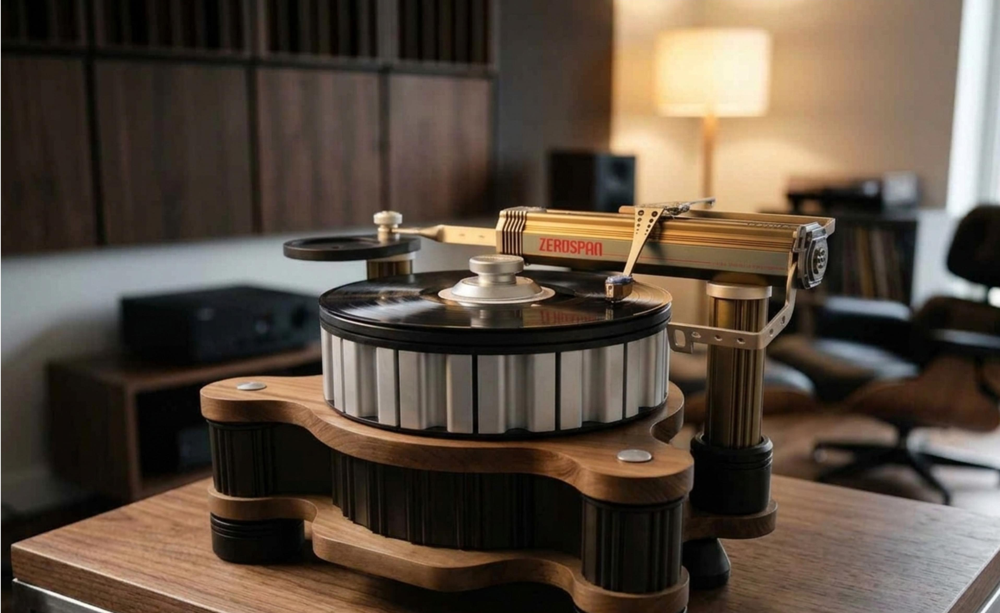
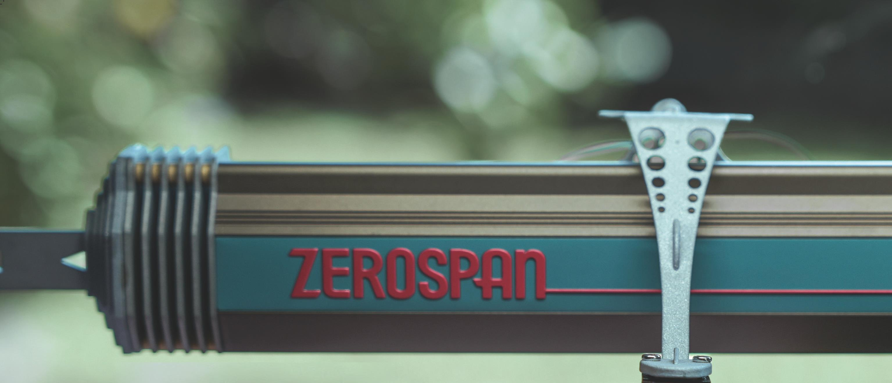
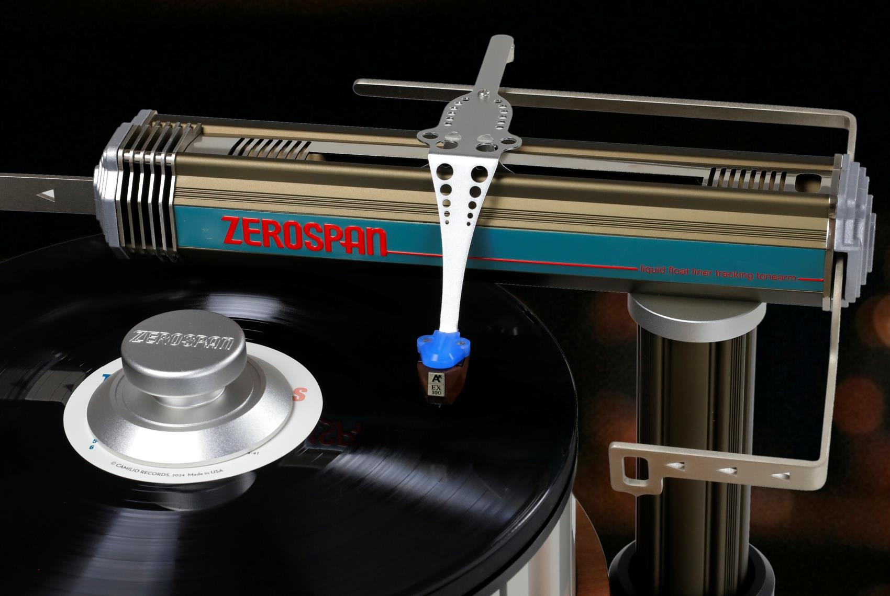

Z300 液浮正切唱臂唱盤向下探索 ↓
關於 ZEROSPAN
從零出發，
聽見更遠的風景。
ZERO，是歸零的初心。
SPAN，是跨越的可能。
ZEROSPAN 將對聲音的追求，化為結構與材料的反覆探索。從唱針接觸音軌的那一刻開始，思考如何減少干擾，讓黑膠唱片裡的細節自然流露。
以液浮正切唱臂為核心，Z300 將六項創新設計融入一部唱盤。為熱愛黑膠的你，開啟另一種聆聽體驗。
歸零，是為了更靠近音樂。
液浮正切唱臂 / 實機細節核心技術
以水的柔，
還原聲音的真。
利用靜態液浮，無須外加動力，唱頭即可順應音軌位移，始終維持正切角度。
唱臂本身不自生震動，液體同時隔絕外來震動的傳遞，讓唱頭純淨發聲。
靜態液浮無外加動力
正切循軌順應音軌位移
液體隔振減少外來干擾
榮獲世界多國發明專利 ↗
Z300 設計探索
六項創新，
只為一件事：好好聽。
從傳動到唱頭，重新思考每一處細節。
點選設計，探索 Z300 的構造。

ZEROSPANZ300液浮正切唱臂唱盤
液浮正切唱臂
靜態液浮結構，讓唱頭順應音軌位移並維持正切角度。以液體隔絕外來震動，回到純淨的發聲起點。
柔性直驅傳動
以柔性直驅傳動，重新思考馬達與轉盤之間的連結，讓傳動與隔振在同一個設計裡取得平衡。
快拆式馬達模組
獨立的馬達模組設計，方便拆裝與維護，讓器材的日常調整更直覺。
造型轉盤
以鋁製轉盤結合 CNC 切削與不同材料，將機械結構與外觀工藝融為一體。
可微調外延高度的唱片墊
唱片墊外延高度可微調，配合唱片厚度進行調整，讓細節設定更貼近每一次播放。
唱頭軟性固定套
透過軟性固定套安裝唱頭，提供另一種唱頭與唱臂的連結方式，並方便移動唱頭位置。
重新聆聽你的黑膠收藏
黑膠音色，
值得再向前一步。
熟悉的唱片，還有值得發現的細節。
與聲音，現場相遇
歡迎來到
我們的聆聽現場。
近距離認識 Z300 與液浮正切唱臂，
一起聊聊器材，也聊聊你喜歡的音樂。
展出器材ZEROSPAN Z300液浮正切唱臂唱盤
展覽名稱與日期待公布
展覽地點與攤位待公布
展期與攤位確認後，將於此頁更新。歡迎收藏本頁，展後也能隨時回看器材介紹。
把交流，延續到展後
下一次好聲音，
從這裡開始。
想了解 Z300、交流黑膠心得，或詢問器材細節？
加入 ZEROSPAN 的 LINE，讓我們繼續聊。